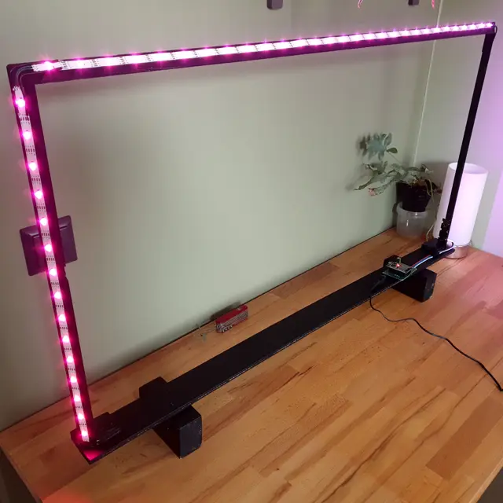
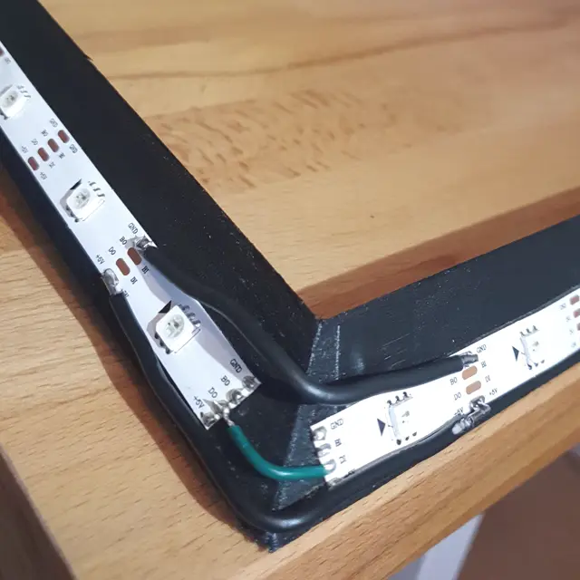
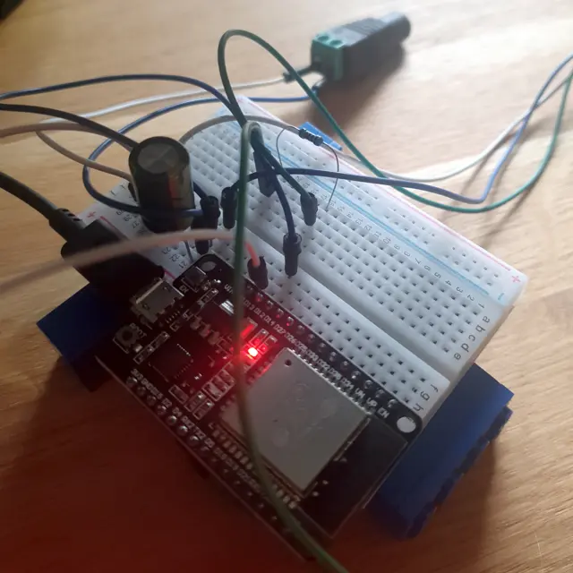
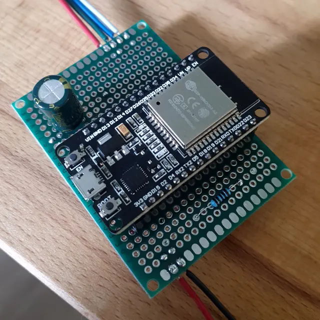
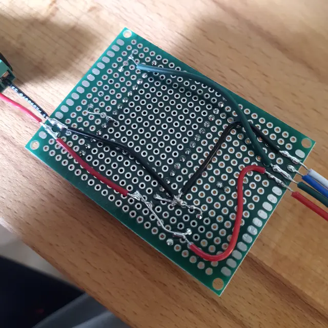
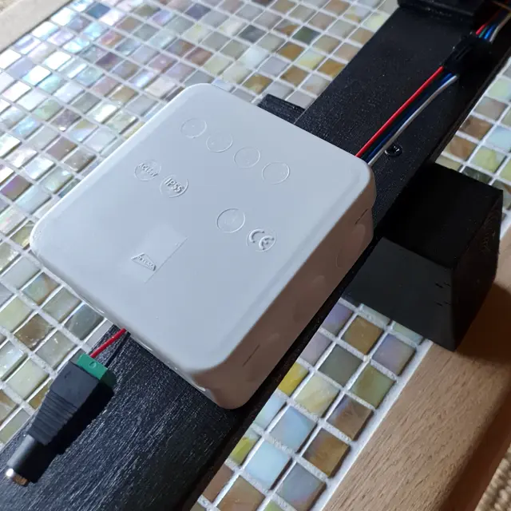
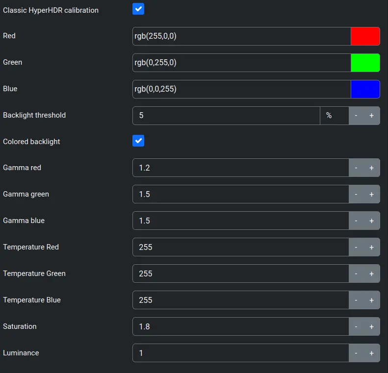
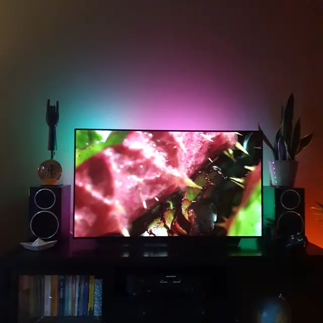

Build log for ambilight on a rooted LG TV
2024-09-05
We recently bought a second-hand LG OLED TV to replace our old Phillips Ambilight TV. It's awesome, because OLED, but I missed the Ambilight feature of my old TV.
Although you can get these devices ready made, I thought it would be more fun to build it myself. These setups usually consist of the following:
- Frame capture device (HDMI Splitter + USB frame grabber)
- Image processing service + host (Raspberry Pi + HyperHDR)
- LED strip + Controller (ESP32 + WLED)
The frame grabber is an hdmi video capture device video capture card that streams images to a Raspberry Pi. The Raspberry Pi runs HyperHDR, an image processing service that analyzes the video stream, and turns it into a signal for the LED strip. Note that HyperHDR does not control the LED strip itself, this is done using WLED.
Since many LG TVs running WebOS can be rooted, it can host PicCap (frame capture service) and HyperHDR directly. This avoids setting up a Rasperry Pi with video grabber, making the setup a whole lot cheaper and more efficient.
The Frame
I build a custum frame from solid wood, and bits and pieces I found at the DIY store and at home. The idea is that the frame acts as a support for the LED strip. It sits about 10 cm behind my TV, and I used diagonally cut wooden slats with a 45 degree angle, so that the LEDs project outward onto the wall. The frame is roughly 5 cm smaller on all sides that my TV.
For the LED strip, I used 2x WS2813 LED strips (1m / 30 LEDs). I cut the strip to size and soldered the corners.
|
{kind=link}

{kind=link}

The Controller
The second step was to set up the LED strip using WLED. I had an old ESP32 lying around, which I used to install WLED. I installed WLED through the very convenient web interface.
Parts list:
- ESP32 (ESP-WROOM-32)
- 100 Ohm resistance
- DC Jack Female 5.5mm to Terminal Block
- 5V/2A power adapter with 5.5mm DC Jack
- Cable box from DIY store
Install WLED
List USB devices:
$ lsusb
...
Bus 001 Device 036: ID 10c4:ea60 Silicon Labs CP210x UART Bridge
...I used /dev/serial/ to find the right COM port:
$ ls -ltr /dev/serial/by-id/
total 0
lrwxrwxrwx. 1 root root 13 Sep 3 08:42 usb-Silicon_Labs_CP2102_USB_to_UART_Bridge_Controller_0001-if00-port0 -> ../../ttyUSB0To verify the installation was succesful, I could log in to the web interface and added it to Home Assistant for good measure 😅
wled failed to open serial port
I was struck with error: wled failed to open serial port. This means my browser does not have the correct rights to write to the USB device. This can be solved by setting read/write permissions. Do not forget to reset the permissions afterwards.
sudo chmod a+rw /dev/serial/by-id/usb-Silicon_Labs_CP2102_USB_to_UART_Bridge_Controller_0001-if00-port0- Flash
sudo chmod 600 /dev/serial/by-id/usb-Silicon_Labs_CP2102_USB_to_UART_Bridge_Controller_0001-if00-port0
Soldering
I build everything on a bread board first following the scheme in the quick-start guide. Later on I soldered everything onto a prototype board and put it in small cable box.
Some notes:
- Make sure to connect data to GPIO16, which is labeled RX2 on my ESP: https://www.mathaelectronics.com/wp-content/uploads/2022/08/image-19.png
- I used a 100 Ohm resistor, but apparently this is not necessary. When assembling the prototype board I had issues getting everything to work. It worked fine on the bread board, but no signal on the soldered prototype board. After a while I figured out that my resistor was faulty. To make things worse, I learned that is not necessary at all!! it turns out that the resistor only serves to clean up the data line. So I left it out in the final assembly.
- Solder bridges were very difficult to make for me. I ended using jump wires for everything, which was much easier.
|
{kind=link}

{kind=link}

{kind=link}

{kind=link}

The TV
I wanted to run everything directly from my TV, which means that I needed root on my LG C3.
I used this table to find a method root. I ended up using [dejavuln-autoroot](https://github.com/throwaway96/dejavuln-autoroot, which was very simple. Once succesful, this installs the homebrew channel.
Blocking updates
I added these addresses to my Adguard blocklist to block the TV from updating, which could break the root:
lgtvonline.lge.com
snu.lge.com
su.lge.com
su-ssl.lge.com
snu-dev.lge.com
su-dev.lge.com
nsu.lge.comSoftware setup
Once rooted, I installed PicCap and HyperHDR. These are meant to be used in combination.
PicCap takes screenshots of the current image on the TV, and HyperHDR is an image processing that grabs the screenshots from Piccap and LED output, essentially rectreating ambilight frem Phillips TVs. s needed for WLED.
Note that HyperHDR does not have an interface for WebOS, you have to connect and configure it via the web interface. It took me a while to find out the default port, so here it is: http://<IP_OF_LG_TV>:8090.
Setting everything up in HyperHDR was a bit of fiddling, but it speaks for itself. To get the colors right, I had to tweak the Image processing settings to get the colors to pop on our green wall:
{kind=link}

The Satisfaction
Really happy with the end result. It's more reactive than what I'm used to from Ambilight, and the colours feel more vibrant. Bonus: I can tune the brightness via Home Assistant, and use it as a lamp when the TV is off.
{kind=link}
